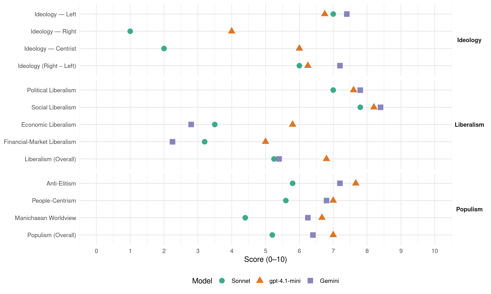

(Spain, 2015)
manifesto_id 33098_201512
Get full text: This site shows derived annotations and short verbatim quotes only. The full manifesto text is © Manifesto Project / WZB — obtain it via manifesto-project.wzb.eu using the manifesto_id above.
Headline scores
| Dimension | Sonnet | gpt-4.1-mini | Gemini |
|---|---|---|---|
| Populism (Overall) | 5.2 | 7.0 | 6.4 |
| Anti-Elitism | 5.8 | 7.7 | 7.2 |
| People-Centrism | 5.6 | 7.0 | 6.8 |
| Manichaean Worldview | 4.4 | 6.7 | 6.2 |
| Ideology (Right − Left) | 6.0 | 6.2 | 7.2 |
| Liberalism (Overall) | 5.2 | 6.8 | 5.4 |
| Political Liberalism | 7.0 | 7.6 | 7.8 |
| Social Liberalism | 7.8 | 8.2 | 8.4 |
| Economic Liberalism | 3.5 | 5.8 | 2.8 |
| Financial-Market Liberalism | 3.2 | 5.0 | 2.2 |
Evidence per dimension
Economic Liberalism
Gemini · score 2.0 · verified · chunk 1
“idea extrema del lliure mercat s’ha de substituir”
La idea extrema del lliure mercat s’ha de substituir per un paradigma mixt: el mercat i l’estat
Gemini · score 2.0 · verified · chunk 2
“eliminar la privatització i externalització”
requisits i condicions dels serveis prestats per empreses privades a fi de reduir i eliminar la privatització i externalització de serveis
Gemini · score 3.0 · verified · chunk 3
“ens oposem a la ratificació dels tractats comercials TTIP”
representatives del sector. Ens oposem a la ratificació dels tractats comercials TTIP, TISA (Acord en Comerç de Serveis)
Gemini · score 4.0 · verified · chunk 4
“paralitzant les intencions de dividir i debilitar l’empresa pública”
negoci del transport ferroviari, paralitzant les intencions de dividir i debilitar l’empresa pública, per tal de privatitzar els itineraris
Gemini · score 3.0 · verified · chunk 5
“Preferència a la titularitat pública de la gestió, rectificant l’actual procés privatitz ador”
la voluntat de servei a la ciutadania i la utilització amb eficàcia dels recursos públics. Preferència a la titularitat pública de la gestió, rectificant l’actual procés privatitz ador, millorant la gestió dels instruments de Dret Públic
gpt-4.1-mini · score 4.0 · verified · chunk 1
“La idea extrema del lliure mercat s’ha de substituir per un paradigma mixt: el mercat i l’estat han d’actuar com a institucions complementàries”
Les institucions públiques han de tenir un paper actiu en la vida econòmica, regulant el mercat, redistribuint les rendes, produint serveis fonamentals, estabilitzant les fluctuacions i guiant el desenvolupament. La idea extrema del lliure mercat s’ha de substituir per un paradigma mixt: el mercat i l’estat han d’actuar com a institucions complementàries per a la generació de benestar per a tots i totes.
gpt-4.1-mini · score 6.0 · verified · chunk 2
“foment de la responsabilitat social corporativa acceptada”
Promoure que les empreses apliquen la responsabilitat social corporativa acceptada en la Unió Europea separant dels seus càrrecs de responsabilitat a les persones implicades en casos de corrupció.
gpt-4.1-mini · score 6.0 · verified · chunk 3
“promocionar la demanda d’innovacions per part de les empreses sobre el sistema de recerca i desenvolupament públic”
Promocionar la demanda d’innovacions per part de les empreses sobre el sistema de recerca i desenvolupament públic, subvencionant les empreses que facen demandes concretes i ben definides. Defensa dels productes industrials propis contra la competència deslleial dels productes extracomunitaris, promovent legislació europea adient (major control dels productes perniciosos i nocius en el consum, dels fabricats amb treball infantil o quasi-esclavitud, dels generadors de contaminació en la seua producció, etc.), acompanyada de mesures que possibiliten la seua aplicació.
gpt-4.1-mini · score 7.0 · verified · chunk 4
“Millora i adaptació d’accessibilitat de les instal·lacions esportives públiques”
Austeritat en la gestió dels clubs esportius per tal que no se subvencione cap societat privada esportiva professional amb fons públics per evitar la seua fallida. Foment de l’esport en l’escola orientat a educar en una vida saludable i previndre l’obesitat, sedentarisme, etc. des de ben menuts. Dotació de beques per a la pràctica de l’esport quan es tracte d’una necessitat mèdica.
gpt-4.1-mini · score 6.0 · verified · chunk 5
“Manteniment del caràcter progressiu de l’impost sobre la renda de les persones físiques”
…Manteniment del caràcter progressiu de l’impost sobre la renda de les persones físiques, configurant una tarifa amb un nombre suficient de trams, uns tipus marginals mínims i màxims i les bases sobre les quals s’apliquen, i establirem el sistema de deduccions en la quota…
Sonnet · score 3.0 · verified · chunk 1
“La idea extrema del lliure mercat s’ha de substituir”
La idea extrema del lliure mercat s’ha de substituir per un paradigma mixt: el mercat i l’estat han d’actuar com a institucions complementàries per a la generació de benestar per a tots i totes.
Sonnet · score 3.0 · verified · chunk 2
“privatització de la sanitat”
En aquest context de pèrdua de drets socials, conseqüència del desmantellament de l’educació i la privatització de la sanitat, i la manca d’oportunitats d’emancipar-se
Sonnet · score 4.0 · mixed · chunk 3
“Ens oposem a la ratificació dels tractats comercials TTIP”
Ens oposem a la ratificació dels tractats comercials TTIP, TISA (Acord en Comerç de Serveis) i CETA (Acord Integral d’Economia i Comerç que amenacen nostra sobirania
Sonnet · score 4.0 · verified · chunk 4
“Millorar la competitivitat. Incrementar l’eficiència ecològica”
Millorar la competitivitat. Incrementar l’eficiència ecològica dels processos econòmics i disminuir l’intensitat energètica i hídrica de la nostra economia
Sonnet · score 4.0 · verified · chunk 5
“Preferència a la titularitat pública de la gestió”
Preferència a la titularitat pública de la gestió, rectificant l’actual procés privatitzador, millorant la gestió dels instruments de Dret Públic
Financial-Market Liberalism
Gemini · score 2.0 · verified · chunk 1
“l’existència d’una banca pública és fonamental”
A més, l’existència d’una banca pública és fonamental per a que el sistema financer estiga al servei de les necessitats
Gemini · score 2.0 · verified · chunk 3
“banca pública atorgarà fons i microcrèdits”
les empreses solidàries. La banca pública atorgarà fons i microcrèdits a molt baixos tipus d’interés per
Gemini · score 3.0 · verified · chunk 4
“crear una Banca Pública forta”
Plantejarem la conveniència de crear una Banca Pública forta, que puga cobrir el buit social
Gemini · score 2.0 · verified · chunk 5
“crear una Banca Pública forta”
Plantejarem la conveniència de crear una Banca Pública forta, que puga cobrir el buit social propiciat per les caixes d’estalvi.
gpt-4.1-mini · score 3.0 · verified · chunk 1
“El sector financer és una part actora central per al desenvolupament econòmic i social que ha de tenir una regulació pública efectiva”
El sector financer és una part actora central per al desenvolupament econòmic i social que ha de tenir una regulació pública efectiva. A més, l’existència d’una banca pública és fonamental per a que el sistema financer estiga al servei de les necessitats de l’economia real.
gpt-4.1-mini · score 7.0 · verified · chunk 2
“publicar els noms de les entitats financeres”
Obligació del Ministeri d’Economia (Comissió de prevenció del blanqueig de capitals) de publicar els noms de les entitats financeres, asseguradores, les agències de valors, les SICAV, fons de pensions, societats de capital de risc, que hagen infringit l’obligació d’informar sobre operacions sospitoses de blanqueig de capitals.
gpt-4.1-mini · score 5.0 · verified · chunk 3
“Suport financer a les experiències de banca ètica promogudes des de la societat civil”
S’impulsaran els centres especials de treball i a les empreses que treballen per la inserció laboral de col·lectius amb risc d’exclusió social a més de donar suport financer a les experiències de banca ètica promogudes des de la societat civil, així com d’altres propostes d’economia solidària (consum ecològic, turisme solidari, agricultura ecològica, etc.).
gpt-4.1-mini · score 6.0 · verified · chunk 4
“Suport institucional a les activitats desplegades per la Banca Ètica”
5.7. Sistema financer i finançament just Per una banca al servei de la societat Suport institucional a les activitats desplegades per la Banca Ètica. Els bancs hauran d’estar obligats a tenir un coeficient de suport creditici reservat a les PIMES i a emprenedors individuals que demostren la viabilitat dels seus projectes d’inversió segons criteris objectius que es fixaran reglamentàriament.
gpt-4.1-mini · score 4.0 · verified · chunk 5
“Impost per a grans fortunes i per a gravar les transaccions financeres especulatives”
…Impost per a grans fortunes i per a gravar les transaccions financeres especulatives, seguint el model de la Taxa Tobin. Recuperació de l’impost de successions i donacions, elevant els mínims exempts però dotant-ho de millor progressivitat…
Sonnet · score 2.0 · verified · chunk 1
“l’existència d’una banca pública és fonamental”
A més, l’existència d’una banca pública és fonamental per a que el sistema financer estiga al servei de les necessitats de l’economia real.
Sonnet · score 3.0 · verified · chunk 2
“entitats financeres, asseguradores, les agències de valors”
Obligació del Ministeri d’Economia (Comissió de prevenció del blanqueig de capitals) de publicar els noms de les entitats financeres, asseguradores, les agències de valors, les SICAV, fons de pensions
Sonnet · score 4.0 · verified · chunk 3
“Facilitar l’accés al crèdit de les xicotetes empreses”
Facilitar l’accés al crèdit de les xicotetes empreses que siguen econòmicament viables Donar facilitats administratives a la creació de noves empreses
Sonnet · score 4.0 · verified · chunk 4
“Els bancs hauran d’estar obligats a tenir un coeficient”
Els bancs hauran d’estar obligats a tenir un coeficient de suport creditici reservat a les PIMES i a emprenedors individuals que demostren la viabilitat dels seus projectes d’inversió segons criteris objectius
Sonnet · score 3.0 · verified · chunk 5
“Plantejarem la conveniència de crear una Banca Pública forta”
Plantejarem la conveniència de crear una Banca Pública forta, que puga cobrir el buit social propiciat per les caixes d’estalvi
Political Liberalism
Gemini · score 8.0 · verified · chunk 1
“processos de presa de decisions més participats”
Existeixen les condicions per a avançar cap a processos de presa de decisions més participats, donant veu a la societat civil
Gemini · score 8.0 · verified · chunk 2
“mecanismes de legitimitat i participació”
Un dels grans problemes de la nostra democràcia ha sigut la falta de mecanismes de legitimitat i participació.
Gemini · score 8.0 · verified · chunk 3
“Reforma de la Llei de Transparència”
al Congrés i del Senat i creació d’un registre de lobbies. Reforma de la Llei de Transparència per declarar l’accés a la informació
Gemini · score 7.0 · verified · chunk 4
“desenvolupament de la democràcia tecnològica”
administracions públiques per actuar com exemple del desenvolupament de la democràcia tecnològica.
Gemini · score 8.0 · verified · chunk 5
“garanties per a la seua independència política i econòmica”
Cal posar en marxa el Consell Estatal de Mitjans Audiovisuals CEMA com a òrgan regulador, supervisor i sancionador del sector, tot establint per llei garanties per a la seua independència política i econòmica.
gpt-4.1-mini · score 8.0 · verified · chunk 1
“Rescatar la democràcia per a que mai més les polítiques que ens afecten estiguen decidides per elits que no es presenten a les eleccions”
La voluntat d’una majoria de valencians i valencianes va per altres camins: Recuperar i ampliar l’Estat del Benestar equiparant-lo als nivells europeus. Rescatar la democràcia per a que mai més les polítiques que ens afecten estiguen decidides per elits que no es presenten a les eleccions.
gpt-4.1-mini · score 8.0 · verified · chunk 2
“Garantir l’accés efectiu a la justícia gratuïta”
Garantir l’accés efectiu a la justícia gratuïta, evitant que qüestions administratives puguen suposar barreres per al gaudi d’aquest dret.
gpt-4.1-mini · score 8.0 · verified · chunk 3
“Reforma de la Llei de Transparència per declarar l’accés a la informació com a dret fonamental”
Reforma de la Llei de Transparència per declarar l’accés a la informació com a dret fonamental, eliminant excepcions poc justificades, com “els interesos econòmics i comercials” Foment de la «cultura open data»: la incorporació de la metodologia de «dades obertes» és una eina essencial per a evitar opacitats, corrupció, clientelisme o pràctiques poc virtuoses; és una filosofia que persegueix que les dades estiguen disponibles de forma lliure a tothom, sense restriccions de copyright, patents o altres mecanismes de control.
gpt-4.1-mini · score 7.0 · verified · chunk 4
“Garantia del dret a la informació del conjunt de la ciutadania”
El benestar comunicatiu ha de suposar: Garantia del dret a la informació del conjunt de la ciutadania, posant-hi els mitjans per a fer-lo efectiu. Compliment del dret d’accés als mitjans públics i privats per part dels grups, associacions, entitats i persones afectades per qualsevol assumpte o problema.
gpt-4.1-mini · score 7.0 · verified · chunk 5
“Democratització de les administracions públiques, fent-les més transparents”
…Democratització de les administracions públiques, fent-les més transparents i acostant-les a les ciutadanes i ciutadans, tot implementant instruments de participació en la planificació, presa de decisions, desenvolupament, execució i gestió de les polítiques públiques…
Sonnet · score 7.0 · verified · chunk 1
“La democràcia és el pilar central de la nostra societat”
La democràcia és el pilar central de la nostra societat. La captura del dret a decidir de la ciutadania per poders que no es presenten a les eleccions ha de ser revertida.
Sonnet · score 8.0 · verified · chunk 2
“regeneració democràtica de les nostres institucions”
Establir les normes necessàries per a la regeneració democràtica de les nostres institucions, especialment implantar la transparència de l’activitat parlamentària dels càrrecs electes.
Sonnet · score 7.0 · verified · chunk 3
“Reforma de la Llei de Transparència per declarar l’accés”
Reforma de la Llei de Transparència per declarar l’accés a la informació com a dret fonamental, eliminant excepcions poc justificades
Sonnet · score 6.0 · verified · chunk 4
“El Parlament assumirà un control efectiu”
El Parlament assumirà un control efectiu sobre les activitats realitzades pels serveis policials i d’intel·ligència i sobre totes les partides de fons reservats gestionades per l’Estat.
Sonnet · score 7.0 · verified · chunk 5
“El Parlament assumirà un control efectiu”
El Parlament assumirà un control efectiu sobre les activitats realitzades pels serveis policials i d’intel·ligència i sobre totes les partides de fons reservats
Liberalism (Overall)
Gemini · score 5.0 · verified · chunk 1
“idea extrema del lliure mercat s’ha de substituir”
La idea extrema del lliure mercat s’ha de substituir per un paradigma mixt: el mercat i l’estat
Gemini · score 6.0 · verified · chunk 2
“mecanismes de legitimitat i participació”
Un dels grans problemes de la nostra democràcia ha sigut la falta de mecanismes de legitimitat i participació.
Gemini · score 5.0 · verified · chunk 3
“Reforma de la Llei de Transparència”
al Congrés i del Senat i creació d’un registre de lobbies. Reforma de la Llei de Transparència per declarar l’accés a la informació
Gemini · score 6.0 · verified · chunk 4
“desenvolupament de la democràcia tecnològica”
administracions públiques per actuar com exemple del desenvolupament de la democràcia tecnològica.
Gemini · score 5.0 · verified · chunk 5
“garanties per a la seua independència política i econòmica”
Cal posar en marxa el Consell Estatal de Mitjans Audiovisuals CEMA com a òrgan regulador, supervisor i sancionador del sector, tot establint per llei garanties per a la seua independència política i econòmica.
gpt-4.1-mini · score 6.0 · verified · chunk 1
“Rescatar la democràcia per a que mai més les polítiques que ens afecten estiguen decidides per elits que no es presenten a les eleccions”
La voluntat d’una majoria de valencians i valencianes va per altres camins: Recuperar i ampliar l’Estat del Benestar equiparant-lo als nivells europeus. Rescatar la democràcia per a que mai més les polítiques que ens afecten estiguen decidides per elits que no es presenten a les eleccions.
gpt-4.1-mini · score 8.0 · verified · chunk 2
“Garantir l’accés efectiu a la justícia gratuïta”
Garantir l’accés efectiu a la justícia gratuïta, evitant que qüestions administratives puguen suposar barreres per al gaudi d’aquest dret.
gpt-4.1-mini · score 7.0 · verified · chunk 3
“Reforma de la Llei de Transparència per declarar l’accés a la informació com a dret fonamental”
Reforma de la Llei de Transparència per declarar l’accés a la informació com a dret fonamental, eliminant excepcions poc justificades, com “els interesos econòmics i comercials” Foment de la «cultura open data»: la incorporació de la metodologia de «dades obertes» és una eina essencial per a evitar opacitats, corrupció, clientelisme o pràctiques poc virtuoses; és una filosofia que persegueix que les dades estiguen disponibles de forma lliure a tothom, sense restriccions de copyright, patents o altres mecanismes de control.
gpt-4.1-mini · score 7.0 · verified · chunk 4
“Garantia del dret a la informació del conjunt de la ciutadania”
El benestar comunicatiu ha de suposar: Garantia del dret a la informació del conjunt de la ciutadania, posant-hi els mitjans per a fer-lo efectiu. Compliment del dret d’accés als mitjans públics i privats per part dels grups, associacions, entitats i persones afectades per qualsevol assumpte o problema.
gpt-4.1-mini · score 6.0 · verified · chunk 5
“Democratització de les administracions públiques, fent-les més transparents”
…Democratització de les administracions públiques, fent-les més transparents i acostant-les a les ciutadanes i ciutadans, tot implementant instruments de participació en la planificació, presa de decisions, desenvolupament, execució i gestió de les polítiques públiques…
Sonnet · score 5.0 · verified · chunk 1
“Impulsar la transparència, la participació i la honestedat”
Impulsar la transparència, la participació i la honestedat en el funcionament de les institucions, desterrant la corrupció, el nepotisme i el balafiament.
Sonnet · score 6.0 · verified · chunk 2
“regeneració democràtica de les nostres institucions”
Establir les normes necessàries per a la regeneració democràtica de les nostres institucions, especialment implantar la transparència de l’activitat parlamentària dels càrrecs electes.
Sonnet · score 5.0 · mixed · chunk 3
“Reforma de la Llei de Transparència per declarar l’accés”
Reforma de la Llei de Transparència per declarar l’accés a la informació com a dret fonamental, eliminant excepcions poc justificades
Sonnet · score 5.0 · verified · chunk 4
“El Parlament assumirà un control efectiu”
El Parlament assumirà un control efectiu sobre les activitats realitzades pels serveis policials i d’intel·ligència i sobre totes les partides de fons reservats gestionades per l’Estat.
Sonnet · score 5.0 · verified · chunk 5
“El Parlament assumirà un control efectiu”
El Parlament assumirà un control efectiu sobre les activitats realitzades pels serveis policials i d’intel·ligència
Anti-Elitism
Gemini · score 9.0 · verified · chunk 1
“les seues lleialtats no estan amb els valencians”
Les elits de hui no són diferents de les d’ahir: les seues lleialtats no estan amb els valencians i les valencianes.
Gemini · score 8.0 · verified · chunk 2
“la corrupció s´ha enquistat”
Durant dècades, amb els governs del PP i del PSOE, la corrupció s´ha enquistat i s’ha convertit en una ruïna
Gemini · score 8.0 · verified · chunk 3
“evitar opacitats, corrupció, clientelisme”
dades obertes» és una eina essencial per a evitar opacitats, corrupció, clientelisme o pràctiques poc virtuoses; és
Gemini · score 6.0 · verified · chunk 4
“mantenir un oligopoli del sector elèctric tradicional”
desenvolupament normatiu vergonyós, només en base a mantenir un oligopoli del sector elèctric tradicional que veu com la reducció
Gemini · score 5.0 · verified · chunk 5
“no tinguen en cap cas finalitats de caire polític o partidista”
Reformulació dels serveis d’informació dels diferents cossos de seguretat per a que no tinguen en cap cas finalitats de caire polític o partidista.
gpt-4.1-mini · score 9.0 · verified · chunk 1
“les institucions estaven en mans de governants que les usaven en benefici propi i dels seus amiguets”
El 15M i la Primavera Valenciana posaren sobre la taula que les institucions estaven en mans de governants que les usaven en benefici propi i dels seus amiguets. Hi ha hagut una separació creixent entre la classe política i la ciutadania.
gpt-4.1-mini · score 7.0 · verified · chunk 2
“la corrupció s´ha enquistat i s’ha convertit en una ruïna”
Durant dècades, amb els governs del PP i del PSOE, la corrupció s´ha enquistat i s’ha convertit en una ruïna no només política, social i econòmica, sinó estructural.
gpt-4.1-mini · score 7.0 · verified · chunk 3
“les relacions entre empreses i institucions públiques han de deixar de ser clientelars i corruptives”
Les relacions entre empreses i institucions públiques han de deixar de ser clientelars i corruptives, i d’estar al servei d’unes minories que posseïsquen el poder. Necessitem lideratge públic social des d’una perspectiva de direcció estratègica, coordinació, assessorament tècnic, transferència de fons, coneixements, desenvolupament de la ciència, generació de tecnologia, creació d’infraestructures o foment de projectes comuns entre agents privats i institucions públiques.
Sonnet · score 9.0 · verified · chunk 1
“les seues lleialtats no estan amb els valencians”
Les elits de hui no són diferents de les d’ahir: les seues lleialtats no estan amb els valencians i les valencianes. Només responen a una pàtria: el seu patrimoni.
Sonnet · score 5.0 · verified · chunk 2
“governs del PP i del PSOE, la corrupció s´ha enquistat”
Durant dècades, amb els governs del PP i del PSOE, la corrupció s´ha enquistat i s’ha convertit en una ruïna no només política, social i econòmica, sinó estructural.
Sonnet · score 6.0 · verified · chunk 3
“interessos corporatius de partit pels interessos generals”
El canvi consisteix en saber mirar més enllà del cicle electoral i substituir els interessos corporatius de partit pels interessos generals de les persones.
Sonnet · score 5.0 · verified · chunk 4
“mantenir un oligopoli del sector elèctric tradicional”
El Govern actual ha proposat un desenvolupament normatiu vergonyós, només en base a mantenir un oligopoli del sector elèctric tradicional que veu com la reducció de la demanda d’energia afecta la rendibilitat econòmica de les seues centrals.
Sonnet · score 4.0 · verified · chunk 5
“rectificant l’actual procés privatitzador”
Preferència a la titularitat pública de la gestió, rectificant l’actual procés privatitzador, millorant la gestió dels instruments
Ideology — Centrist
gpt-4.1-mini · score 7.0 · verified · chunk 1
“un projecte de país per a tots oposat a la societat de privilegiats que els que governaven la Generalitat i encara governen l’Estat volen”
Venim de llocs molt diferents i en el passat hem votat a partits diversos, però ara ens uneix una idea forta: un projecte de país per a tots oposat a la societat de privilegiats que els que governaven la Generalitat i encara governen l’Estat volen.
gpt-4.1-mini · score 5.0 · verified · chunk 2
“Volem ser el poble honest que sempre hem sigut”
La cultura de la corrupció ha de ser eradicada de les nostres vides. Volem ser el poble honest que sempre hem sigut; la gent treballadora i honrada que ens van ensenyar a ser els nostres majors.
gpt-4.1-mini · score 6.0 · verified · chunk 3
“substituir els interessos corporatius de partit pels interessos generals de les persones”
El canvi consisteix en saber mirar més enllà del cicle electoral i substituir els interessos corporatius de partit pels interessos generals de les persones. Els reptes per al nou model no són pocs: generar molts llocs de treball i, al mateix temps, incrementar la productivitat; augmentar la dotació de capital i tecnologia; ressituarnos en l’especialització competitiva cap a segments de major valor afegit; reconstruir un nou model social que amplie els serveis públics; recuperar les institucions com a agents centrals del desenvolupament.
Sonnet · score 2.0 · verified · chunk 1
“gent corrent donara un pas avant”
Aquesta situació d’expropiació de la democràcia feia necessari que gent corrent donara un pas avant per a recuperar les institucions
Sonnet · score 2.0 · verified · chunk 2
“substituir els interessos corporatius de partit pels interessos generals”
El canvi consisteix en saber mirar més enllà del cicle electoral i substituir els interessos corporatius de partit pels interessos generals de les persones.
Sonnet · score 2.0 · verified · chunk 3
“Creació d’una figura de control ciutadà”
Creació d’una figura de control ciutadà a les meses d’adjudicació de contractes de regulació harmonitzada, on seran convidats membres d’entitats socials
Sonnet · score 2.0 · verified · chunk 4
“la ciutadania a l’accés lliure”
així com el dret de la ciutadania a l’accés lliure a aquestes fonts renovables.
Sonnet · score 2.0 · verified · chunk 5
“Democratització de les administracions públiques”
Democratització de les administracions públiques, fent-les més transparents i acostant-les a les ciutadanes i ciutadans
Ideology — Left
Gemini · score 8.0 · verified · chunk 1
“redistribuir cap als que menys tenen”
garantir recursos suficients per a fer sostenible la despesa pública, redistribuir cap als que menys tenen i eliminar els privilegis d’uns pocs.
Gemini · score 8.0 · verified · chunk 2
“a causa de les polítiques neoliberals”
la destrucció de l’estat del benestar i la precarització del món laboral a causa de les polítiques neoliberals
Gemini · score 8.0 · verified · chunk 3
“despesa supèrflua i no ha cuidat al sector de les pimes”
errors d’un model que ha prevalgut la despesa supèrflua i no ha cuidat al sector de les pimes ni dels autònoms, i els ha
Gemini · score 6.0 · verified · chunk 4
“crear una Banca Pública forta”
Plantejarem la conveniència de crear una Banca Pública forta, que puga cobrir el buit social
Gemini · score 7.0 · verified · chunk 5
“Impost per a grans fortunes i per a gravar les transaccions financeres”
reequilibrar de manera justa el pes de les diferents rendes en l’impost i ampliar el seu caràcter re distribuïdor. Impost per a grans fortunes i per a gravar les transaccions financeres especulatives, seguint el model de la Taxa Tobin.
gpt-4.1-mini · score 8.0 · verified · chunk 1
“una reforma fiscal profunda que ha de basar-se en garantir recursos suficients per a fer sostenible la despesa pública, redistribuir cap als que menys tenen i eliminar els privilegis d’uns pocs”
Cal equiparar la tributació efectiva de grans empreses i grans patrimonis a la de la resta de la població per a fer efectiva la progressivitat. Cal combatre enèrgicament el frau fiscal i promoure un marc tributari europeu capaç de gravar els fluxos de capital i acabar amb els paradisos fiscals.
gpt-4.1-mini · score 7.0 · verified · chunk 2
“desmantellament de l’educació i la privatització de la sanitat”
En aquest context de pèrdua de drets socials, conseqüència del desmantellament de l’educació i la privatització de la sanitat, i la manca d’oportunitats d’emancipar-se, els joves requereixen de polítiques actives que incentiven la seua inserció en la societat i els permeta construir un projecte de vida propi.
gpt-4.1-mini · score 7.0 · verified · chunk 3
“promoure la responsabilitat social i empresarial i l’auditoria social”
S’han de redefinir les relacions de producció i les funcions entre aquests: s’ha de fomentar la responsabilitat social i empresarial i l’auditoria social, dins i fora de les empreses. En aquesta línia, mereix un esment especial l’economia social, encara que el ventall és més ample.
gpt-4.1-mini · score 5.0 · verified · chunk 5
“Impost per a grans fortunes i per a gravar les transaccions financeres especulatives”
…Modificació del tracte privilegiat de les rendes del capital i empresarials, per reequilibrar de manera justa el pes de les diferents rendes en l’impost i ampliar el seu caràcter re distribuïdor. Impost per a grans fortunes i per a gravar les transaccions financeres especulatives, seguint el model de la Taxa Tobin. Recuperació de l’impost de successions i donacions…
Sonnet · score 9.0 · verified · chunk 1
“redistribuir cap als que menys tenen”
una reforma fiscal profunda que ha de basar-se en garantir recursos suficients per a fer sostenible la despesa pública, redistribuir cap als que menys tenen i eliminar els privilegis d’uns pocs.
Sonnet · score 7.0 · verified · chunk 2
“destrucció de l’estat del benestar i la precarització del món laboral”
La joventut es troba amb un present hipotecat, degut a la destrucció de l’estat del benestar i la precarització del món laboral a causa de les polítiques neoliberals
Sonnet · score 7.0 · verified · chunk 3
“La desigualtat social ha crescut”
La desigualtat social ha crescut i amb ella l’exclusió i la falta d’oportunitats. La causa més important ha estat l’increment de l’atur
Sonnet · score 6.0 · verified · chunk 4
“Plantejarem la conveniència de crear una Banca Pública forta”
Plantejarem la conveniència de crear una Banca Pública forta, que puga cobrir el buit social propiciat per les caixes d’estalvi. i que done especial atenció a les experiències d’economia social i treball associat
Sonnet · score 6.0 · verified · chunk 5
“Impost per a grans fortunes i per a gravar les transaccions financeres especulatives”
Impost per a grans fortunes i per a gravar les transaccions financeres especulatives, seguint el model de la Taxa Tobin
Ideology (Right − Left)
Gemini · score 8.0 · verified · chunk 1
“redistribuir cap als que menys tenen”
garantir recursos suficients per a fer sostenible la despesa pública, redistribuir cap als que menys tenen i eliminar els privilegis d’uns pocs.
Gemini · score 8.0 · verified · chunk 2
“a causa de les polítiques neoliberals”
la destrucció de l’estat del benestar i la precarització del món laboral a causa de les polítiques neoliberals
Gemini · score 8.0 · verified · chunk 3
“despesa supèrflua i no ha cuidat al sector de les pimes”
errors d’un model que ha prevalgut la despesa supèrflua i no ha cuidat al sector de les pimes ni dels autònoms, i els ha
Gemini · score 6.0 · verified · chunk 4
“crear una Banca Pública forta”
Plantejarem la conveniència de crear una Banca Pública forta, que puga cobrir el buit social
Gemini · score 6.0 · verified · chunk 5
“Impost per a grans fortunes i per a gravar les transaccions financeres”
reequilibrar de manera justa el pes de les diferents rendes en l’impost i ampliar el seu caràcter re distribuïdor. Impost per a grans fortunes i per a gravar les transaccions financeres especulatives, seguint el model de la Taxa Tobin.
gpt-4.1-mini · score 7.0 · verified · chunk 1
“un projecte de país per a tots oposat a la societat de privilegiats que els que governaven la Generalitat i encara governen l’Estat volen”
Venim de llocs molt diferents i en el passat hem votat a partits diversos, però ara ens uneix una idea forta: un projecte de país per a tots oposat a la societat de privilegiats que els que governaven la Generalitat i encara governen l’Estat volen.
gpt-4.1-mini · score 6.0 · verified · chunk 2
“la corrupció s´ha enquistat i s’ha convertit en una ruïna”
Durant dècades, amb els governs del PP i del PSOE, la corrupció s´ha enquistat i s’ha convertit en una ruïna no només política, social i econòmica, sinó estructural.
gpt-4.1-mini · score 6.0 · verified · chunk 3
“substituir els interessos corporatius de partit pels interessos generals de les persones”
El canvi consisteix en saber mirar més enllà del cicle electoral i substituir els interessos corporatius de partit pels interessos generals de les persones. Els reptes per al nou model no són pocs: generar molts llocs de treball i, al mateix temps, incrementar la productivitat; augmentar la dotació de capital i tecnologia; ressituarnos en l’especialització competitiva cap a segments de major valor afegit; reconstruir un nou model social que amplie els serveis públics; recuperar les institucions com a agents centrals del desenvolupament.
gpt-4.1-mini · score 6.0 · verified · chunk 5
“Exigir la domiciliació fiscal en territori espanyol per a poder representar Espanya”
…Exigir la domiciliació fiscal en territori espanyol per a poder representar Espanya en qualsevol activitat esportiva. Austeritat en la gestió dels clubs esportius per tal que no se subvencione cap societat privada esportiva professional amb fons públics per evitar la seua fallida…
Sonnet · score 8.0 · verified · chunk 1
“La idea extrema del lliure mercat s’ha de substituir”
La idea extrema del lliure mercat s’ha de substituir per un paradigma mixt: el mercat i l’estat han d’actuar com a institucions complementàries
Sonnet · score 6.0 · verified · chunk 2
“destrucció de l’estat del benestar i la precarització del món laboral”
La joventut es troba amb un present hipotecat, degut a la destrucció de l’estat del benestar i la precarització del món laboral a causa de les polítiques neoliberals
Sonnet · score 6.0 · verified · chunk 3
“La desigualtat social ha crescut”
La desigualtat social ha crescut i amb ella l’exclusió i la falta d’oportunitats. La causa més important ha estat l’increment de l’atur
Sonnet · score 5.0 · verified · chunk 4
“Plantejarem la conveniència de crear una Banca Pública forta”
Plantejarem la conveniència de crear una Banca Pública forta, que puga cobrir el buit social propiciat per les caixes d’estalvi. i que done especial atenció a les experiències d’economia social i treball associat
Sonnet · score 5.0 · verified · chunk 5
“Impost per a grans fortunes i per a gravar les transaccions financeres especulatives”
Impost per a grans fortunes i per a gravar les transaccions financeres especulatives, seguint el model de la Taxa Tobin
Ideology — Right
gpt-4.1-mini · score 3.0 · verified · chunk 1
“Les elits valencianes tenen un projecte de país molt allunyat de les necessitats de la ciutadania”
Les elits valencianes tenen un projecte de país molt allunyat de les necessitats de la ciutadania. La seua aposta de convertir-nos en la platja de Madrid ha col·lapsat per insostenible i injusta.
gpt-4.1-mini · score 3.0 · verified · chunk 3
“oposem a la ratificació dels tractats comercials TTIP, TISA i CETA”
Ens oposem a la ratificació dels tractats comercials TTIP, TISA (Acord en Comerç de Serveis) i CETA (Acord Integral d’Economia i Comerç que amenacen nostra sobirania, nostra democràcia i nostra economia i l’Estat de benestar, perquè considera les regulacions socials i mediambientals com a simples obstacles per al comerç.
gpt-4.1-mini · score 6.0 · verified · chunk 5
“Exigir la domiciliació fiscal en territori espanyol per a poder representar Espanya”
…Exigir la domiciliació fiscal en territori espanyol per a poder representar Espanya en qualsevol activitat esportiva. Austeritat en la gestió dels clubs esportius per tal que no se subvencione cap societat privada esportiva professional amb fons públics per evitar la seua fallida…
Sonnet · score 1.0 · verified · chunk 1
“Acabarem amb el cicle repressiu contra les persones migrants”
Acabarem amb el cicle repressiu contra les persones migrants (concertines i pressió policial a les fronteres; vols de deportació, batudes racistes).
Sonnet · score 1.0 · verified · chunk 3
“Defensa dels productes industrials propis contra la competència deslleial”
Defensa dels productes industrials propis contra la competència deslleial dels productes extracomunitaris, promovent legislació europea adient
Sonnet · score 1.0 · verified · chunk 4
“autonomia energètica de la societat”
A més estalvia molts milions d’euros en petroli i fomenta l’autonomia energètica de la societat fent-la resistent a l’increments dels preus dels combustibles.
Sonnet · score 1.0 · verified · chunk 5
“Exigir la domiciliació fiscal en territori espanyol”
Exigir la domiciliació fiscal en territori espanyol per a poder representar Espanya en qualsevol activitat esportiva
Manichaean Worldview
Gemini · score 8.0 · verified · chunk 1
“actuar com una màfia que ha saquejat”
no han dubtat en actuar com una màfia que ha saquejat el país a base d’especulació i corrupció.
Gemini · score 6.0 · verified · chunk 2
“extirpe tot el mal que ens han fet”
una lluita ferma, sense dubitacions; una lluita que extirpe tot el mal que ens han fet.
Gemini · score 7.0 · verified · chunk 3
“al servei d’unes minories”
deixar de ser clientelars i corruptives, i d’estar al servei d’unes minories que posseïsquen el poder. Necessitem
Gemini · score 4.0 · verified · chunk 4
“defensa dels interessos del sector energètic tradicional”
energies renovables s’han de buscar en la defensa dels interessos del sector energètic tradicional per part del Govern espanyol
gpt-4.1-mini · score 9.0 · verified · chunk 1
“Les valencianes som una comunitat d’iguals i no unes elits que ho volen tot en mans d’uns pocs”
Les valencianes som una comunitat d’iguals i no unes elits que ho volen tot en mans d’uns pocs. Des de Morella fins a Oriola, passant per Requena i Alacant, la gent que habitem este territori aspirem a un projecte de futur en comú.
gpt-4.1-mini · score 6.0 · verified · chunk 2
“La lluita contra la corrupció ha de ser una lluita ferma, sense dubitacions”
La lluita contra la corrupció ha de ser una lluita ferma, sense dubitacions; una lluita que extirpe tot el mal que ens han fet.
gpt-4.1-mini · score 5.0 · verified · chunk 3
“oposem a la ratificació dels tractats comercials TTIP, TISA i CETA”
Ens oposem a la ratificació dels tractats comercials TTIP, TISA (Acord en Comerç de Serveis) i CETA (Acord Integral d’Economia i Comerç que amenacen nostra sobirania, nostra democràcia i nostra economia i l’Estat de benestar, perquè considera les regulacions socials i mediambientals com a simples obstacles per al comerç.
Sonnet · score 8.0 · verified · chunk 1
“actuar com una màfia que ha saquejat el país”
en el passat no dubtaren en abandonar la llengua i ara no han dubtat en actuar com una màfia que ha saquejat el país a base d’especulació i corrupció.
Sonnet · score 4.0 · verified · chunk 2
“extirpe tot el mal que ens han fet”
La lluita contra la corrupció ha de ser una lluita ferma, sense dubitacions; una lluita que extirpe tot el mal que ens han fet.
Sonnet · score 4.0 · verified · chunk 3
“minories que posseïsquen el poder”
Les relacions entre empreses i institucions públiques han de deixar de ser clientelars i corruptives, i d’estar al servei d’unes minories que posseïsquen el poder.
Sonnet · score 3.0 · verified · chunk 4
“defensa dels interessos del sector energètic tradicional”
Les causes de l’abandonament de les energies renovables s’han de buscar en la defensa dels interessos del sector energètic tradicional per part del Govern espanyol
Sonnet · score 3.0 · verified · chunk 5
“Lluitarem decididament contra el frau fiscal”
Lluitarem decididament contra el frau fiscal, impulsant actuacions en l’ordre internacional per aconseguir la desaparició de tots els paradisos fiscals
People-Centrism
Gemini · score 9.0 · verified · chunk 1
“Som el poble i no volem mai més”
Som el poble i no volem mai més unes institucions que governen contra nosaltres.
Gemini · score 7.0 · verified · chunk 2
“Volem ser el poble honest”
la cultura de la corrupció ha de ser eradicada de les nostres vides. Volem ser el poble honest que sempre hem sigut
Gemini · score 7.0 · verified · chunk 3
“interessos generals de les persones”
cicle electoral i substituir els interessos corporatius de partit pels interessos generals de les persones. Els reptes per al nou
Gemini · score 5.0 · verified · chunk 4
“dret de la ciutadania a l’accés lliure”
les energies renovables, així com el dret de la ciutadania a l’accés lliure a aquestes fonts renovables.
Gemini · score 6.0 · verified · chunk 5
“Suport als processos populars democràtics”
Reconeixement immediat de Palestina com a estat sobirà. Suport als processos populars democràtics en curs arreu del món, cooperant amb els nous governs.
gpt-4.1-mini · score 9.0 · verified · chunk 1
“Som el Poble”
El 24 de maig vam fer un primer pas que cal continuar. “Som el Poble”, els repetíem. Som eixa comunitat de persones que matinem cada dia pera fer funcionar el país.
gpt-4.1-mini · score 6.0 · verified · chunk 2
“Volem ser el poble honest que sempre hem sigut”
La cultura de la corrupció ha de ser eradicada de les nostres vides. Volem ser el poble honest que sempre hem sigut; la gent treballadora i honrada que ens van ensenyar a ser els nostres majors.
gpt-4.1-mini · score 6.0 · verified · chunk 3
“substituir els interessos corporatius de partit pels interessos generals de les persones”
El canvi consisteix en saber mirar més enllà del cicle electoral i substituir els interessos corporatius de partit pels interessos generals de les persones. Els reptes per al nou model no són pocs: generar molts llocs de treball i, al mateix temps, incrementar la productivitat; augmentar la dotació de capital i tecnologia; ressituarnos en l’especialització competitiva cap a segments de major valor afegit; reconstruir un nou model social que amplie els serveis públics; recuperar les institucions com a agents centrals del desenvolupament.
Sonnet · score 9.0 · verified · chunk 1
“Som el Poble”
“Som el Poble”, els repetíem. Som eixa comunitat de persones que matinem cada dia pera fer funcionar el país.
Sonnet · score 5.0 · verified · chunk 2
“Volem ser el poble honest que sempre hem sigut”
La cultura de la corrupció ha de ser eradicada de les nostres vides. Volem ser el poble honest que sempre hem sigut; la gent treballadora i honrada que ens van ensenyar a ser els nostres majors.
Sonnet · score 5.0 · verified · chunk 3
“interessos generals de les persones”
substituir els interessos corporatius de partit pels interessos generals de les persones. Els reptes per al nou model no són pocs
Sonnet · score 4.0 · verified · chunk 4
“la població consumidora siga part activa”
s’ha dedicat a mantenir, a través d’una estructura oligopolista i tancada, la impossibilitat que la població consumidora siga part activa en la cobertura de les seues necessitats energètiques.
Sonnet · score 5.0 · verified · chunk 5
“acostant-les a les ciutadanes i ciutadans”
fent-les més transparents i acostant-les a les ciutadanes i ciutadans, tot implementant instruments de participació
Populism (Overall)
Gemini · score 9.0 · verified · chunk 1
“Som el poble i no volem mai més”
Som el poble i no volem mai més unes institucions que governen contra nosaltres.
Gemini · score 7.0 · verified · chunk 2
“la corrupció s´ha enquistat”
Durant dècades, amb els governs del PP i del PSOE, la corrupció s´ha enquistat i s’ha convertit en una ruïna
Gemini · score 7.0 · verified · chunk 3
“al servei d’unes minories”
deixar de ser clientelars i corruptives, i d’estar al servei d’unes minories que posseïsquen el poder. Necessitem
Gemini · score 5.0 · verified · chunk 4
“mantenir un oligopoli del sector elèctric tradicional”
desenvolupament normatiu vergonyós, només en base a mantenir un oligopoli del sector elèctric tradicional que veu com la reducció
Gemini · score 4.0 · verified · chunk 5
“Suport als processos populars democràtics”
Reconeixement immediat de Palestina com a estat sobirà. Suport als processos populars democràtics en curs arreu del món, cooperant amb els nous governs.
gpt-4.1-mini · score 9.0 · verified · chunk 1
“les institucions estaven en mans de governants que les usaven en benefici propi i dels seus amiguets”
El 15M i la Primavera Valenciana posaren sobre la taula que les institucions estaven en mans de governants que les usaven en benefici propi i dels seus amiguets. Hi ha hagut una separació creixent entre la classe política i la ciutadania.
gpt-4.1-mini · score 6.0 · verified · chunk 2
“la corrupció s´ha enquistat i s’ha convertit en una ruïna”
Durant dècades, amb els governs del PP i del PSOE, la corrupció s´ha enquistat i s’ha convertit en una ruïna no només política, social i econòmica, sinó estructural.
gpt-4.1-mini · score 6.0 · verified · chunk 3
“les relacions entre empreses i institucions públiques han de deixar de ser clientelars i corruptives”
Les relacions entre empreses i institucions públiques han de deixar de ser clientelars i corruptives, i d’estar al servei d’unes minories que posseïsquen el poder. Necessitem lideratge públic social des d’una perspectiva de direcció estratègica, coordinació, assessorament tècnic, transferència de fons, coneixements, desenvolupament de la ciència, generació de tecnologia, creació d’infraestructures o foment de projectes comuns entre agents privats i institucions públiques.
Sonnet · score 9.0 · verified · chunk 1
“Rescatar la democràcia per a que mai més”
Rescatar la democràcia per a que mai més les polítiques que ens afecten estiguen decidides per elits que no es presenten a les eleccions.
Sonnet · score 4.0 · verified · chunk 2
“governs del PP i del PSOE, la corrupció s´ha enquistat”
Durant dècades, amb els governs del PP i del PSOE, la corrupció s´ha enquistat i s’ha convertit en una ruïna no només política, social i econòmica, sinó estructural.
Sonnet · score 5.0 · verified · chunk 3
“interessos corporatius de partit pels interessos generals”
substituir els interessos corporatius de partit pels interessos generals de les persones. Els reptes per al nou model no són pocs
Sonnet · score 4.0 · verified · chunk 4
“mantenir un oligopoli del sector elèctric tradicional”
El Govern actual ha proposat un desenvolupament normatiu vergonyós, només en base a mantenir un oligopoli del sector elèctric tradicional que veu com la reducció de la demanda d’energia afecta la rendibilitat econòmica de les seues centrals.
Sonnet · score 4.0 · verified · chunk 5
“acostant-les a les ciutadanes i ciutadans”
fent-les més transparents i acostant-les a les ciutadanes i ciutadans, tot implementant instruments de participació
Social Liberalism